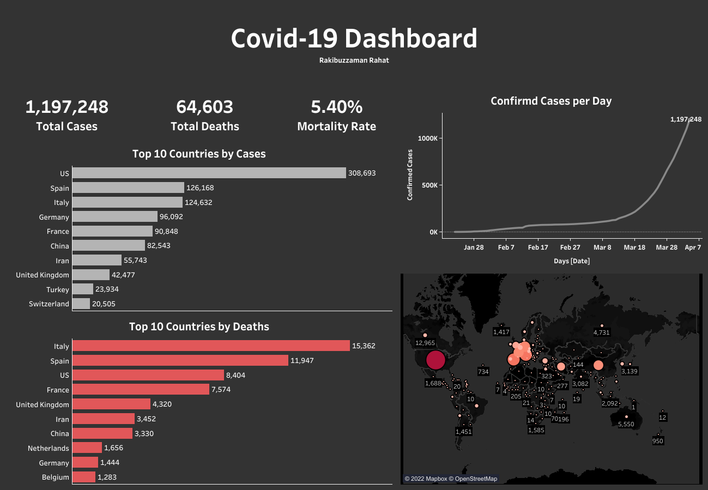
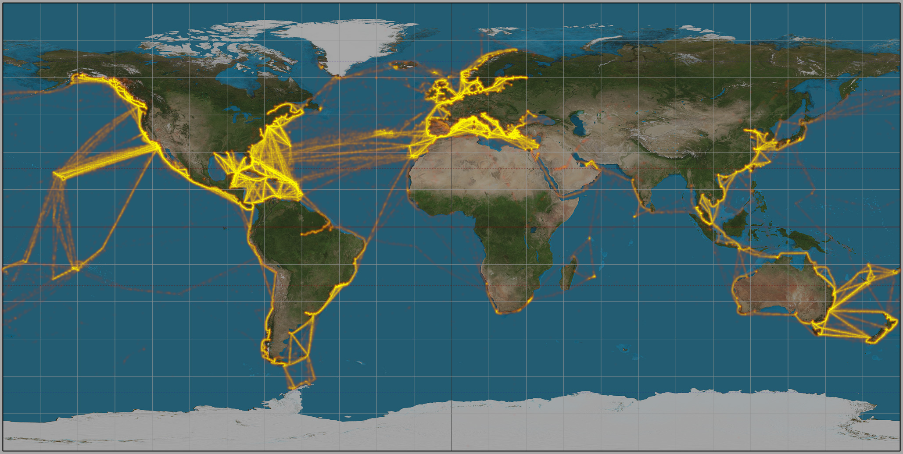

Covid-19 Data Visualization
This a data visualisation project on Covid-19 dataset. This data contains the total confirmed cases and deaths as of 4th April, 2020 worldwide. You can download the dataset here.
Before jumping on the analysis, a few decisions were taken and these are:
- Availability of the data.
- Visualisation tool(s).
- End goal of the project.
Regarding availability of the data, many forms of Covid-19 data is available on the internet. I have used the data mentioned above.
The visualisation tool I have used here is Tableau Public. Tableau is one of the foremost visualisation tools used in the industry. It provides real time data analysis from one or more sources. It can cater for big datasets.
The end goal of the project is to build a dashboard that is in sync with updated data in real time.
Exploratory Data Analysis
The data is exported as a csv file instead of directly linking the google sheet. The two sheets inside the xlsx file confirmed cases and deaths were combined inside Tableau. There were a few feature columns that was omitted (FIPS-only used for USA, table names).
Three new features were generated using the Tableau Calculated field option. These are:
- Total confirmed cases (#)
- Total deaths (#)
- Mortality rates (%)

While filtering by Country, there was an attribute namely Curise ship. It indicates the number of people that were comfirmed cases (734) and had died (14) on a cruise ship. To indicate that on the world map I have used the location near the Caribbean Islands to mark the most used cruise ship routes.

After that I have used the data and features to build the dashboard. You can view the ineractive dashboard right here. Please feel free to provide feedbacks. For more visualisation visit this link.